Poradnik · 48 porad
Poradnik: zamki, kluczyki samochodowe, elektronika auta i DPF
Praktyczne odpowiedzi na sytuacje, z którymi kierowcy i domownicy dzwonią do pogotowia zamkowego i samochodowego: zatrzaśnięte kluczyki, zgubione klucze, zamarznięty zamek, migająca kontrolka immobilizera albo DPF. Piszemy, co możesz sprawdzić sam, czego lepiej nie robić i kiedy warto zadzwonić.
Otwieranie auta
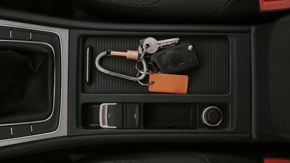
Otwieranie autaKluczyki zatrzaśnięte w aucie – co zrobić krok po kroku
Kluczyki zatrzaśnięte w aucie to jedna z najczęstszych wpadek kierowców. Podpowiadamy, co zrobić krok po kroku, czego unikać, żeby nie narobić szkód, i jak nie dopuścić do powtórki.
Czytaj · 4 min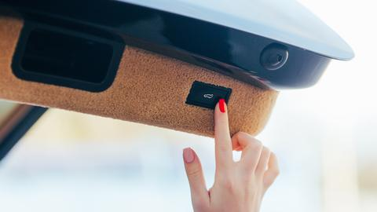
Otwieranie autaKluczyki w bagażniku – co zrobić, gdy klapa się zatrzasnęła
Kluczyki w bagażniku, klapa zatrzaśnięta, a może całe auto zamknięte? Wyjaśniamy, co sprawdzić najpierw, czego nie robić i kiedy wezwać pomoc, żeby nie dokładać sobie kosztów.
Czytaj · 4 min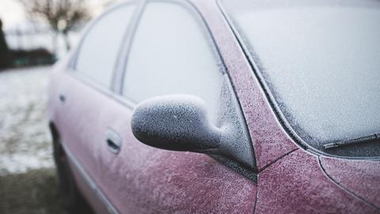
Otwieranie autaZamarznięty zamek w aucie – jak sobie poradzić zimą
Mróz, poranek, a kluczyk nie chce wejść do zamka albo drzwi ani drgną? Zamarznięty zamek w aucie to zimowa klasyka – podpowiadamy, jak go bezpiecznie odmrozić, czego nie robić i jak zapobiegać.
Czytaj · 4 min Otwieranie auta
Otwieranie autaRozładowany akumulator i zamknięte auto – jak dostać się do środka
Pilot nie reaguje, kierunkowskazy nie migają, a drzwi ani drgną? Rozładowany akumulator to częsty powód, dla którego nie możesz otworzyć auta – wyjaśniamy, jak dostać się do środka i co zrobić dalej.
Czytaj · 4 min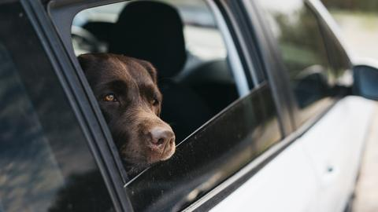
Otwieranie autaDziecko zamknięte w samochodzie lub pies w aucie – co robić
Dziecko zamknięte w samochodzie albo pies w nagrzanym aucie to sytuacja, w której liczą się minuty – najpierw dzwoń na 112. Potem przeczytaj, co jeszcze możesz zrobić i jak zapobiec takiemu zdarzeniu.
Czytaj · 4 min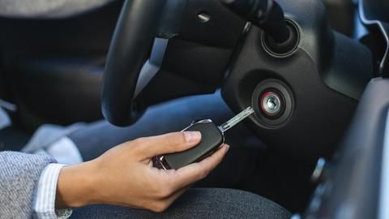
Otwieranie autaZłamany kluczyk w stacyjce lub zamku auta – co dalej
Złamany kluczyk w stacyjce albo w zamku drzwi potrafi unieruchomić auto w najmniej dogodnym momencie. Podpowiadamy, co zrobić od razu, czego unikać i jak odzyskać sprawny kluczyk.
Czytaj · 4 minKluczyki samochodowe
 Kluczyki samochodowe
Kluczyki samochodoweZgubione kluczyki do auta – co zrobić, gdy nie został żaden?
Zgubione kluczyki do auta, a zapasowego brak? Spokojnie – nowy kluczyk da się przygotować i zaprogramować, a zgubiony usunąć z pamięci samochodu. Podpowiadamy, co zrobić po kolei.
Czytaj · 4 min Kluczyki samochodowe
Kluczyki samochodoweZapasowy kluczyk do samochodu – dlaczego warto go mieć
Jeździsz z jednym kluczykiem? Zapasowy kluczyk do samochodu zrobiony na spokojnie to niewielki wydatek w porównaniu z kłopotem, gdy jedyny kluczyk zginie albo się zepsuje.
Czytaj · 4 min Kluczyki samochodowe
Kluczyki samochodowePilot od auta nie działa – najczęstsze przyczyny i co zrobić
Pilot od auta nie działa, a Ty stoisz przy zamkniętym samochodzie? Zanim zaczniesz się martwić, sprawdź kilka prostych rzeczy – wiele usterek rozwiążesz sam w kilka minut.
Czytaj · 4 min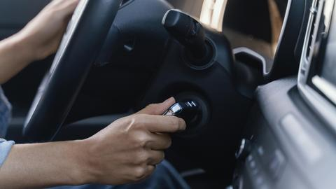
Kluczyki samochodoweKluczyk nie przekręca się w stacyjce – przyczyny i co zrobić
Kluczyk nie przekręca się w stacyjce i auto stoi? Najczęściej winna jest zwykła blokada kierownicy, ale bywa też zużyty kluczyk lub stacyjka. Sprawdź, co zrobisz sam, a czego lepiej unikać.
Czytaj · 4 min Kluczyki samochodowe
Kluczyki samochodoweWymiana baterii w kluczyku samochodowym – krok po kroku
Pilot działa coraz słabiej? Wymiana baterii w kluczyku to zwykle kilka minut pracy. Pokazujemy, jak zrobić to bezpiecznie, jaką baterię kupić i co zrobić, gdy po wymianie kluczyk nadal nie działa.
Czytaj · 4 min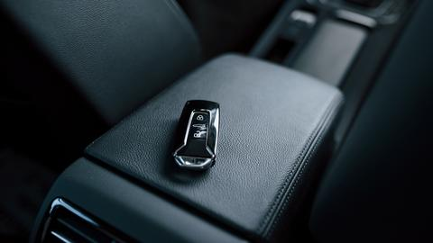
Kluczyki samochodoweTransponder w kluczyku – co to jest i jak działa
Transponder w kluczyku to mały chip bez baterii, od którego zależy, czy silnik w ogóle odpali. Wyjaśniamy prosto, jak działa, co mu szkodzi i co zrobić, gdy auto przestaje go rozpoznawać.
Czytaj · 4 min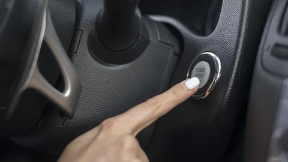
Kluczyki samochodoweKluczyk keyless nie działa – co sprawdzić, zanim wezwiesz pomoc
Kluczyk keyless nie działa, a auto nie reaguje na klamkę ani przycisk START? Zanim pomyślisz o poważnej awarii, sprawdź kilka rzeczy – często winna jest bateria albo zwykłe zakłócenia.
Czytaj · 5 min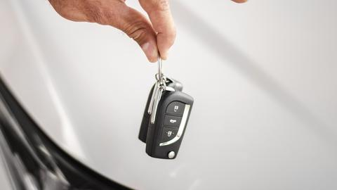
Kluczyki samochodowePęknięta obudowa kluczyka samochodowego – naprawa czy nowy kluczyk?
Pęknięta obudowa kluczyka samochodowego to nie tylko kwestia wyglądu – z luźnej obudowy łatwo wypada bateria, płytka albo chip immobilizera. Podpowiadamy, kiedy wystarczy nowa obudowa, a kiedy lepiej zrobić nowy kluczyk.
Czytaj · 4 min Kluczyki samochodowe
Kluczyki samochodoweKodowanie kluczyka samochodowego – od czego zależy cena i ile to trwa
Pytasz o kodowanie kluczyka i cenę, a słyszysz „to zależy”? Wyjaśniamy, od czego naprawdę zależą koszt i czas pracy – i jakie informacje przygotować, żeby wycena przez telefon była rzetelna.
Czytaj · 4 min Kluczyki samochodoweKluczyk z Allegro lub internetu – czy da się go zaprogramować?
Kluczyk z Allegro kosztuje mniej niż w salonie, ale jego programowanie nie zawsze się udaje. Zobacz, na co zwrócić uwagę przed zakupem, żeby nie zapłacić za część, której nie da się dodać do auta.
Czytaj · 4 min Kluczyki samochodowe
Kluczyki samochodoweDorabianie kluczyków samochodowych – w ASO czy u specjalisty?
Dorabianie kluczyków samochodowych możesz zlecić autoryzowanemu serwisowi albo niezależnemu specjaliście. Obie opcje mają mocne strony – porównujemy je uczciwie, żebyś wybrał to, co pasuje do Twojej sytuacji.
Czytaj · 4 min Kluczyki samochodowe
Kluczyki samochodoweUżywane auto z jednym kluczykiem? Sprawdź kluczyki i immobilizer
Używane auto z jednym kluczykiem to częsty widok w ogłoszeniach. Zanim podpiszesz umowę, sprawdź, ile kluczyków dostajesz, czy każdy działa i czy immobilizer nie budzi wątpliwości.
Czytaj · 5 minBezpieczeństwo
 Bezpieczeństwo
BezpieczeństwoKradzież „na walizkę” – jak chronić auto z systemem keyless
Kradzież „na walizkę” to sposób na auta z systemem keyless, który nie zostawia śladów włamania. Zobacz, jak działa w ogólnym zarysie i co zrobić, żeby Twój samochód nie był łatwym celem.
Czytaj · 4 min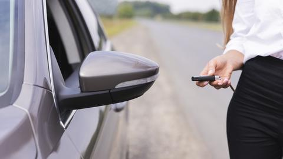
BezpieczeństwoJak zabezpieczyć auto przed kradzieżą – skuteczne sposoby
Jak zabezpieczyć auto przed kradzieżą, żeby złodziej wybrał inny samochód? Najlepiej warstwami: dobre nawyki, blokada mechaniczna, elektronika i porządek z kluczykami.
Czytaj · 4 min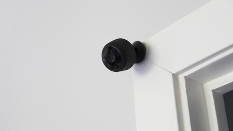
BezpieczeństwoZabezpieczenie mieszkania przed włamaniem – praktyczne porady
Skuteczne zabezpieczenie mieszkania przed włamaniem to nie tylko drogie drzwi. Liczy się kilka warstw ochrony i proste nawyki – zebraliśmy je w jednym miejscu.
Czytaj · 4 minPorady praktyczne
 Porady praktyczne
Porady praktyczneIle kosztuje otwarcie samochodu? Od czego zależy cena
Ile kosztuje otwarcie samochodu, gdy kluczyki zostały w środku? Konkretnej kwoty nie da się rzetelnie podać „w ciemno” – zobacz, od czego zależy cena, o co pytać i jak nie przepłacić.
Czytaj · 4 min Porady praktyczne
Porady praktycznePogotowie zamkowe 24h w nocy, w weekend i w święta – co warto wiedzieć
Zatrzaśnięte drzwi o północy albo zgubione klucze w Wigilię? Pogotowie zamkowe 24h pomaga wtedy, gdy wszystko inne jest zamknięte. Zobacz, jak się przygotować, o co pytać i na co uważać.
Czytaj · 4 min Porady praktyczne
Porady praktyczneUczciwy ślusarz – jak go wybrać i nie dać się oszukać
Uczciwy ślusarz poda cenę przed pracą, sprawdzi Twoje dokumenty i wyjaśni, co zamierza zrobić. Podpowiadamy, po czym go poznać i jakie sygnały powinny Cię zaniepokoić.
Czytaj · 4 min Porady praktycznePogotowie zamkowe – co przygotować, zanim przyjedzie ślusarz?
Wzywasz pogotowie zamkowe? Sprawdź, co przygotować, żeby wszystko poszło sprawnie: dokumenty, informacje dla fachowca i kilka zasad bezpieczeństwa – w formie prostej listy kontrolnej.
Czytaj · 4 min Porady praktyczneKwalifikowany pracownik zabezpieczenia technicznego – co to daje klientowi
Ślusarz wpisany na listę kwalifikowanych pracowników zabezpieczenia technicznego – brzmi poważnie, ale co to właściwie znaczy? Wyjaśniamy, kto prowadzi tę listę, jakie są warunki wpisu i jak sprawdzić fachowca, zanim przyjedzie.
Czytaj · 4 minDom i mieszkanie
 Dom i mieszkanie
Dom i mieszkanieZatrzaśnięte drzwi lub zgubione klucze do mieszkania – co robić
Zatrzaśnięte drzwi, a klucze w środku – albo cały pęk kluczy zniknął? Podpowiadamy, co zrobić w pierwszych minutach, czego unikać i kiedy jeszcze tego samego dnia wymienić wkładkę.
Czytaj · 4 min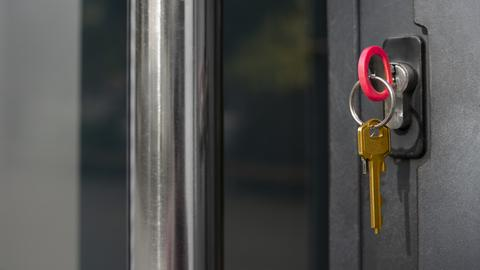
Dom i mieszkanieZłamany klucz w zamku drzwi – co robić, a czego unikać
Złamany klucz w zamku to często skutek wkładki, która od dawna chodziła ciężko. Podpowiadamy, co możesz bezpiecznie zrobić sam, czego unikać i jak nie dopuścić do powtórki.
Czytaj · 4 min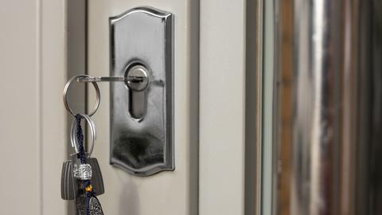
Dom i mieszkanieZacięty zamek w drzwiach – przyczyny i rozwiązania
Zacięty zamek w drzwiach rzadko psuje się z dnia na dzień. Pokazujemy, jak w kilka minut ustalić przyczynę, co możesz zrobić sam i kiedy lepiej nie walczyć z kluczem.
Czytaj · 4 min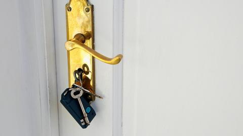
Dom i mieszkanieKlucz w zamku od środka – co zrobić, gdy nie możesz wejść
Klucz wchodzi do zamka, ale nie chce się przekręcić, bo od wewnątrz tkwi drugi? Wyjaśniamy, co zrobić z kluczem w zamku od środka, kiedy liczy się każda minuta i jak zapobiec takiej sytuacji.
Czytaj · 4 min Dom i mieszkanieZatrzaśnięte drzwi w wynajmowanym mieszkaniu – kto płaci i co zrobić
Zatrzaśnięte drzwi w wynajmowanym mieszkaniu to podwójny stres: nie wchodzisz do siebie, a do tego nie wiesz, co powie właściciel. Podpowiadamy, jak działać i jak uczciwie rozliczyć koszty.
Czytaj · 4 min Dom i mieszkanieJaka wkładka do drzwi? Klasy, oznaczenia i wymiary – jak wybrać
Jaka wkładka do drzwi sprawdzi się w Twoim mieszkaniu lub domu? Wyjaśniamy, jak ją zmierzyć, co oznaczają klasy i cyfry na opakowaniu oraz na co uważać przy zakupie.
Czytaj · 4 min Dom i mieszkanieWymiana wkładki w drzwiach – kiedy jest konieczna, a kiedy wymienić zamek?
Wymiana wkładki w drzwiach to jeden z najprostszych sposobów na poprawę bezpieczeństwa. Podpowiadamy, kiedy nie warto z nią zwlekać i kiedy trzeba wymienić cały zamek.
Czytaj · 4 min Dom i mieszkanieZablokowany zamek w garażu, furtce lub bramie – co zrobić?
Zablokowany zamek w garażu albo furtce potrafi zepsuć cały dzień – zwłaszcza gdy w środku stoi auto. Podpowiadamy, co sprawdzić samodzielnie, czego nie robić i jak zapobiegać takim sytuacjom.
Czytaj · 4 minElektronika auta
Awaria sterownika silnika – objawy, przyczyny i co dalej
Auto kręci, ale nie odpala, gaśnie bez powodu albo tester nie widzi sterownika? Objawy, jakie daje awaria sterownika silnika, łatwo pomylić z innymi usterkami. Podpowiadamy, jak je rozpoznać i co zrobić dalej.
Czytaj · 4 min Elektronika autaAuto nie widzi kluczyka – immobilizer blokuje rozruch. Co robić?
Komunikat „Nie wykryto kluczyka”, migająca kontrolka i silnik, który nie chce zapalić? Gdy auto nie widzi kluczyka, zwykle to immobilizer blokuje rozruch. Wyjaśniamy, co to powoduje i co możesz sprawdzić sam.
Czytaj · 4 min Elektronika autaAuto kręci, ale nie odpala – najczęstsze przyczyny i co sprawdzić
Rozrusznik pracuje, a silnik ani myśli zapalić? Gdy auto kręci, ale nie odpala, kilka prostych obserwacji pozwala szybko zawęzić przyczynę. Podpowiadamy, co sprawdzić i czego nie robić.
Czytaj · 4 min Elektronika autaMiga kontrolka immobilizera – co to oznacza i kiedy się martwić
Miga kontrolka immobilizera na postoju albo przy rozruchu? Czasem to zupełnie normalne, a czasem znak, że auto nie rozpoznaje kluczyka. Podpowiadamy, jak to odróżnić i co zrobić.
Czytaj · 4 min Elektronika autaUżywany sterownik silnika – na co uważać przy zakupie
Używany sterownik silnika kusi ceną, ale rzadko działa od razu po wpięciu. Podpowiadamy, co sprawdzić przed zakupem, jakie numery porównać i dlaczego sterownik trzeba dopasować do Twojego auta.
Czytaj · 4 min Elektronika autaZalany sterownik lub elektronika w aucie – co robić?
Woda pod dywanikiem, „choinka” kontrolek albo auto, które nagle nie odpala? Tak często daje o sobie znać zalany sterownik – podpowiadamy, co zrobić od razu, żeby ograniczyć szkody, i czego lepiej nie robić.
Czytaj · 4 min Elektronika autaJęzyk polski w Fordzie i Maździe – co da się zmienić w menu i zegarach
Sprowadziłeś Forda lub Mazdę, a menu mówi po angielsku albo po niemiecku? Wyjaśniamy, od czego zależy wgranie języka polskiego, co zwykle da się zmienić i na co uważać, zanim ktoś podłączy się do Twojego auta.
Czytaj · 4 min Elektronika autaTylne światło przeciwmgłowe w aucie z USA – dlaczego jest potrzebne
Kupiłeś auto z USA i diagnosta pyta o tylne światło przeciwmgłowe? Wyjaśniamy, czemu amerykańskie auta go nie mają, dlaczego w Polsce jest potrzebne i jak dorobić je porządnie, a nie „na kabelek”.
Czytaj · 4 min Elektronika autaAktywacja i wyłączanie funkcji w Fordzie i Maździe – co można zmienić
Twoje auto ma ustawienie, które Cię irytuje, albo funkcję, której nie widać w menu? Wyjaśniamy, na czym polega aktywacja funkcji w Fordzie i Maździe, co zwykle da się zmienić i gdzie są granice.
Czytaj · 4 minFiltr DPF
Filtr DPF – jak dbać, kiedy czyścić i czego unikać
Jak dbać o filtr DPF, żeby latami działał bez kłopotów? Wyjaśniamy, co mu szkodzi, jakie nawyki pomagają, jaki olej wybrać i kiedy sama jazda w trasie już nie wystarczy.
Czytaj · 4 min Filtr DPFŚwieci się kontrolka DPF – co robić?
Zapaliła się kontrolka DPF i nie wiesz, czy możesz jechać dalej? Wyjaśniamy, co oznacza, kiedy wystarczy jazda w trasie, a kiedy lepiej od razu umówić diagnostykę.
Czytaj · 4 min Filtr DPFRegeneracja czy czyszczenie DPF – czym się różnią?
Czyszczenie DPF i regeneracja filtra to nie to samo. Wyjaśniamy, co usuwa każdy z tych zabiegów, kiedy który ma sens i dlaczego bez znalezienia przyczyny oba pomogą tylko na chwilę.
Czytaj · 4 min Filtr DPFCzujnik różnicy ciśnień DPF – objawy awarii i co sprawdzić
Kontrolka DPF, tryb awaryjny albo regeneracje bez końca? Za takimi objawami często stoi czujnik różnicy ciśnień DPF lub jego przewody – wyjaśniamy, jak działa, jak rozpoznać awarię i czego nie robić.
Czytaj · 4 min Filtr DPFWycięty DPF a przegląd i przepisy – dlaczego tego nie robimy
Wycięty DPF to częsty temat przy zakupie używanego diesla i przed przeglądem. Wyjaśniamy, co mówią przepisy, co może się stać przy kontroli drogowej i na badaniu technicznym, jakie zmiany w badaniach zapowiada Unia Europejska i dlaczego zajmujemy się wyłącznie diagnostyką, regeneracją i czyszczeniem filtrów.
Czytaj · 5 minBrak porad pasujących do wyszukiwania. Zadzwoń – doradzimy przez telefon.
Jak korzystać z poradnika
Porady są podzielone na działy: otwieranie auta, kluczyki samochodowe, dom i mieszkanie, elektronika auta, filtr DPF, bezpieczeństwo oraz porady praktyczne. Do wybranego działu przeniosą Cię przyciski u góry strony, a wyszukiwarka znajdzie artykuł po kilku słowach, np. „kluczyk keyless” albo „kontrolka DPF”.
- Sytuacja awaryjna? Nie czytaj wszystkiego – zacznij od porady kluczyki zatrzaśnięte w aucie albo zatrzaśnięte drzwi i zgubione klucze, a jeśli wolisz, od razu zadzwoń.
- Mróz. Gdy kluczyk nie chce się przekręcić w zamku drzwi, zajrzyj do artykułu zamarznięty zamek w samochodzie.
- Nie masz już żadnego kluczyka? Pierwsze kroki opisaliśmy w poradzie zgubione wszystkie kluczyki do auta.
Każdy artykuł kończy się ramką z odnośnikiem do usługi, której dotyczy. Celowo nie publikujemy instrukcji otwierania zamków ani samochodów bez klucza – poradnik ma pomagać właścicielom, a nie ułatwiać kradzież.
Jeśli w aucie zostało zamknięte dziecko albo zwierzę, nie szukaj porad – dzwoń pod 112. Więcej: dziecko lub pies zamknięte w aucie.
Sytuacja awaryjna?
Poradnik poczeka – zadzwoń, a pomożemy od razu.